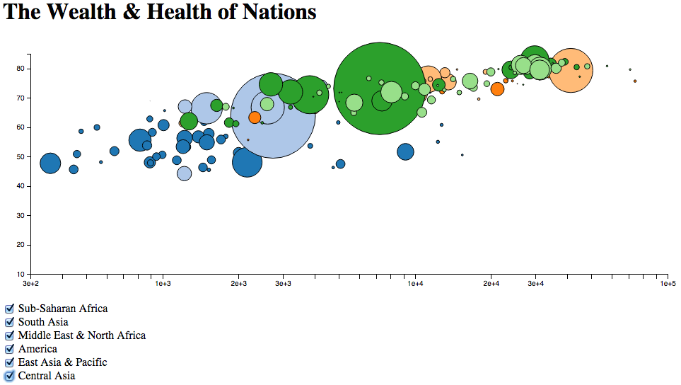

D3 - Add and remove
Dynamically adding and removing data points
Learning Objectives
- Filtering data
- Creating checkboxes
- Adding and removing data points (d3.enter and d3.exit)
Our plot is pretty busy. We might not want to display everythign all the time. The goal for this lesson is to update the plot based on what kind of data we want to display.
First, we need to find a way to filter our data. We use the function filter to do this. Similar to previous functions, this function enters the array nations and loops through each element, temporarily calling it nation. It only returns an element to the new array filtered_nations if the population of a given nation in the first recorded year is larger than 10000000. It is good style to initialise the variable with an empty array before we start using it.
var filtered_nations = [];
filtered_nations = nations.filter(function(nation){ return nation.population[nation.population.length-1][1] > 10000000;});Filtering by region
You might have noticed that our data contains information about the region in which a country is. 1. Create a filter so that you only display data points from "Sub-Saharan Africa".
We have now hardcoded a criterion for the data we want to display. Naturally, we might want to change the data using elements on our page. Let's create some checkboxes that let us tick, which regions we want to display. To do this, we will have to switch back to our html file for a while.
- Checkboxes (exit)
Now, instead of displaying all the data all the time, we want to be able to choose which data we display. We will create a checkbox for each region and only display the data of the regions that are checked.
Checkboxes will need to be added in the html page. Since we want to add and remove data, we'll have to add one checkbox for each region like the following one:
<input type="checkbox" name="region" class="region_cb" value="Sub-Saharan Africa"> Sub-Saharan Africa<br>The next step is to add an event listener to the Javascript file. Luckily D3 provides us with some nice options. The value needs to be set to the region, because this is the value we want to filter our data by later.
d3.selectAll(".region_cb").on("change", function () { <--- stuff happens here --->});This line listens to all checkboxes that have the class region_cb. Every time a checkbox's status changes from checked to unchecked or unchecked to checked, the following function is executed. We want to start this bit right after we appended our canvas by a g element with the class 'dots'.
Inside this function, we want to decide what happens based on which of the checkboxes got checked or unchecked. The first step to doing this is to read out the value of the checkbox. We set this value to the region string earlier. Reading it can be done using the this keyword. this inside a function refers to the element through which the function got called, in our case a checkbox.
var type = this.value;Now that we have the region string saved in type, we want to start adding data points if the checkbox is checked now. Whether it is, is stored in this.checked.
if (this.checked) { // adding data points
var new_nations = nations.filter(function(nation){ return nation.region == type;});
for (var idx=0; idx < new_nations.length; idx++){
filtered_nations.push(new_nations[idx]);
}
}This if-statement gets executed every time a checkbox is checked. To add the data points, we can use the push-function, which adds one object to an array at a time. First, we filter the nations we want to add, calling them new_nations. Next, we are looping through all new nations and add one at a time to the array filtered_nations.
Once the data is added, the key function helps us to update our link to the graph.
So far we can add elements, but we might want to remove them, too. Removing elements in D3 is done using the exit() function. This function is called every time our data set gets smaller. We then have to tell our program what to do with the data points that have disappeared. Let's remove them:
dot.exit().remove();Removing elements
- Using an
elsecase after theifstatement, create a filter, that removes elements fromfiltered_dataas soon as a checkbox is unchecked.else{ filtered_nations = <--- fill in this bit --->}.
Another new dimension
- Have the colour of circles represent the region. Use category20() to make a scale. You will then need to add
.style("fill", function(d) { <-- fill in this bit ---> });to the enter() function.
By the end of this lesson, your page should look something like this:
